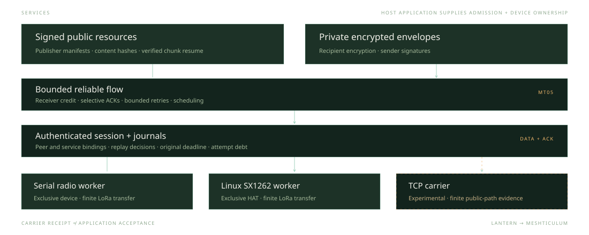

Developer documentation / Technical overview
Follow the bytes.
Keep the boundaries.
Meshticulum separates application acceptance from reliable delivery and radio completion. Each layer has its own evidence, and each transfer keeps its original limits.
The reusable stack
Two services.
A bounded transport.
Applications supply current admission and device ownership. Meshticulum supplies reusable contracts, cryptography, reliable flow, resources and carrier workers.

01 / Protocol
A request is more than a byte range.
The MR1 resource codec names a public pack and resource, then asks for a bounded range. A response carries a truncated hash of that exact request, a status, the total resource length and the returned offset. The reader checks all of them before assembling the bytes.
MR1 is an application codec. Peer authentication, encryption, deadlines and transport ownership must already be enforced by its exchange. A valid response header alone does not establish publisher trust.
02 / Cryptography
Bind the session. Authenticate every frame.
PeerID identifies the full chain and signing-key identity. SessionKey adds both peers, a session identifier and a separate generation. Service, route, profile, limits and expiry enter the session context; a compact reference on the air is not an identity or permission by itself.
Current radio and TCP codecs derive directional keys with HKDF from a provisioned pairwise secret. ChaCha20-Poly1305 authenticates DATA and ACK packets. Transmit counters are reserved durably before encryption, and receive replay decisions are committed before plaintext is exposed. A retransmission gets a fresh outer counter while retaining the flow's logical sequence number.
Private envelopes add a separate boundary: a sender signs the message and seals it to the intended recipient. The compact binary carrier removes outer Base64 framing while preserving the ciphertext and signature.
The current provisioned session codecs and long-term recipient envelopes do not establish it. An experimental forward-session primitive exists in source; native private lifecycle and erasure qualification remain open.
Today’s radio, TCP and private-envelope protocols use classical cryptography. The experimental provider combines X25519 with ML-KEM-768 and requires both Ed25519 and ML-DSA-65 signatures. A sample handshake takes 9,352 bytes before radio headers, ACKs and retries. Device integration and independent cryptographic review remain open. Read the design and run the demo.
03 / Reliable flow
Credit controls what can enter.
MT05 fragments a transfer and tracks receipt with a cumulative acknowledgement plus a 32-bit selective bitmap. Receiver credit counts available capacity, including held reorder frames and unconsumed delivered bytes. A stale ACK cannot create new credit.
The flow owner routes DATA, retries, probes and ACKs through scheduling and admission. Its accepted flow and port are frozen under reviewed source hashes. The authenticated radio composition currently uses packets up to 255 bytes, leaving 193 useful bytes in a DATA frame.
A driver reporting RF_DONE proves local completion of that attempt. An authenticated peer ACK proves another event. Durable public-resource verification comes later.
The opt-in LoRa queue accepts already encrypted DATA ciphertext after capability negotiation and an immutable grant policy. Session keys, authentication, receiver credit, retries and peer-progress decisions stay on the host. ACK and CONTROL packets retain the synchronous path. Queue acceptance delegates bounded future radio starts; it does not prove transmission or peer receipt.
The default four-frame policy holds pending packets and retained outcomes in four admitted slots. The new source candidate can explicitly negotiate eight frames with matching policy and firmware; its physical performance remains unqualified. Every packet keeps the original MCU deadline, with at most two seconds of autonomous hold, independent airtime checks and counters charged before transmit eligibility. Dispatch drains pending receive evidence first, preserves at least 5 ms after successful receive rearm between packets, and allows at least 100 ms of reverse listening after the selected train or an empty queue. A valid header can hold the next start until receive completion or a bounded timeout.
QUEUED, ISSUED, STARTED and RF_DONE remain distinct, with stable event timestamps and exact terminal release acknowledgements. Cancellation or expiry keeps charged debt. Cancelled or expired issued work, and unknown physical outcomes, require containment and fence further dispatch. The successful completion path also checks that STATUS has no pending, retained, active or containment work. The queue is closed by default; its finite 24 October hardware comparison measured 16.48% more useful throughput on one about-20-metre LoRa pair.
Optional grant-bound operation limits select incremental journal ceilings for each endpoint role. They can reduce the permitted attempts and estimated airtime without resetting MCU counters, changing absolute ARM limits or refunding earlier debt.
Accepted reliable flow · Authenticated composition · MCU acceleration and evidence boundaries · Queue protocol
Attempt-journal budget checks and snapshots now read durable aggregate totals, removing repeated scans of retained history. Aggregate updates share the reservation's FULL commit, and opening the journal still rebuilds them from the original records. Charged debt, UNKNOWN outcomes and recovery fences remain. The published journal profile measures local synthetic history; radio results have their own timing boundaries.
The checkout file and bundle examples accept --profile-host for 24 fixed phase aggregates across queue, journal, serial and flow work. Profiling is disabled by default. Its time.perf_counter_ns intervals include blocking and overlap, so their totals cannot be added into end-to-end latency or treated as CPU or RF time. Original authority clocks and cleanup still govern the transfer.
The USB writer rechecks the original deadline after writable readiness returns, immediately before each write. Readiness that returns after expiry is rejected. The 64-byte write limit, 2 ms pacing, MCU listening guards and frozen flow remain unchanged.
Phase boundaries and diagnostic behavior · Local journal profile · Profiled alpha.3 hardware qualification
04 / Verified resources
The publisher's identity survives the path.
A public pack starts with an independently pinned publisher trust root, signed manifest and content-addressed chunks. Lamplighter verifies the manifest and complete chunks before caching them. Availability information helps select a source; it cannot authenticate that source's content.
Bounded MR1 blocks move raw resource bytes over the scarce carrier. Host code reconstructs any batch representation locally for the whole-chunk verifier. A partial transfer remains unverified, and resume reuses only verified work.
Pack schema and signatures · Publisher and cache verification
05 / Path selection
Use measurements, not interface names.
The resource scheduler works with explicitly supplied routes, verified request timings and shared bottlenecks. It can choose another admitted reader for the same content and retain verified chunks. It does not discover routes autonomously or move a live cipher session between carriers.
Finite native public campaigns have exercised mixed LoRa/IP delivery, injected loss, fresh LoRa resume and measured return to IP under one original resource expiry. Those results demonstrate specific service paths. Sustained network capacity is still a separate qualification.
The HTTP gateway carries bounded requests from a radio-only endpoint through a second unit's internet connection and back. Three consecutive links requests rendered public pages in 17.77–17.99 seconds with a normal 30-second timeout; gateway completion was 16.81–17.08 seconds. A lightweight HTTP search and result page also rendered in about 20 seconds. A bounded 3-second startup gap removed the pre-fix startup race. This is still an application gateway, not transparent IP routing or HTTPS CONNECT; Google's HTTPS redirect and 92 KB search page remain outside it.
Resource path policy · Native path evidence · HTTP gateway evidence
06 / Device ownership
A library import cannot grant a radio.
The host application supplies the exclusive port or HAT owner, current peer and service admission, original clock bounds, and attempt journals. Radio workers reserve cost before device writes. An unknown outcome retains debt and fences further dispatch.
Lantern owns its protected SAGE adapters, native device policy, provisioning, product orchestration and deployment. Meshticulum remains usable by other applications without importing those components.